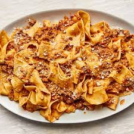

A Bolognese Recipe

Bolognese and why it's always a crowd pleaser -
Bolognese is amazing because it is a hearty and flavorful meat sauce that pairs perfectly with pasta. Made with a blend of savory spices, aromatic vegetables, and rich tomato sauce, bolognese is a comforting and satisfying dish that is perfect for any occasion.
Ingredients
- 1 pound ground beef (or a combination of beef, pork, and/or veal)
- 1 onion, finely chopped
- 2 cloves garlic, minced
- 2 carrots, finely chopped
- 2 celery stalks, finely chopped
- 1 can (28 ounces) crushed tomatoes
- etc.
Steps
- Preheat the oven to 375°F (190°C).
- Cook the lasagna noodles according to package instructions until al dente. Drain and set aside.
- In a large skillet, cook the ground beef over medium heat until browned, breaking it up into small pieces with a wooden spoon.
Add the onion and garlic to the skillet and cook until the onion is translucent, about 5 minutes.
- Add the crushed tomatoes, tomato sauce, basil, oregano, salt, and pepper to the skillet. Stir well to combine and bring the mixture to a simmer. Cook for 10 minutes, stirring occasionally.